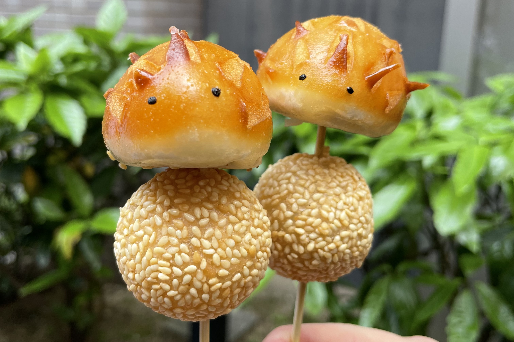
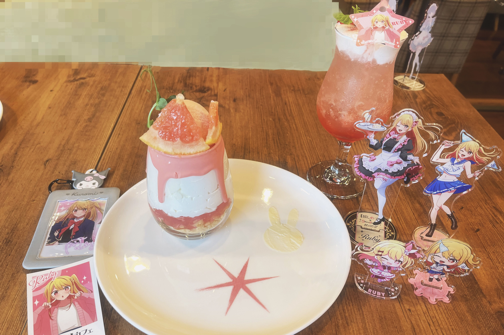

About
私について

寒風 晴菜
Kanpuu Haruna
1999年生まれ
兵庫県出身
-
2018年4月大学入学化学に興味があり化粧品が好きだったため、工学部 応用化学科に入学しました。
-
2022年3月大学卒業大学では分子や化学反応をコンピュータを使ってシミュレーションする計算化学の分野の研究室に入りました。
-
2022年4月工作機械メーカーに就職事務職として就職し、工場で生産管理の仕事をしています。
-
2024年3月Web制作の勉強を始めるITの勉強を深めたいと思い、Web制作に興味を持ち、
オンラインスクールでWeb制作の勉強を始めました。
なぜWeb制作者を目指すのか？
Web制作を通して多くのお客様の課題解決に貢献して喜びを共有したいと思うからです。
私は昔からモノづくりが好きで、現職では多くの商品の生産管理に携わり、間接的にモノづくりに貢献してきました。
しかし、お客様との距離が遠く、喜びを実感しにくい環境でした。そんな中、社内のIT化が進み、
Excelを活用して業務改善を行い、周囲から感謝される経験をしました。この経験をきっかけに、さらにITを学びたいと思い、Web制作に取り組むことにしました。
Web制作の勉強を進める中で、エラー解決の楽しさを実感し、「モノづくりで人の役に立てる仕事であること」「お客様と距離が近いこと」「なんといっても自分自身が夢中に楽しく取り組めること」の3点から本気でWeb制作者を目指すことを決意しました。
今後は、現職で培った責任感を活かし、お客様のに寄り添った制作をできるようになりたいと思っています。
私の強み
-
責任感責任感を持って日々の業務に取り組むことを意識しています。
任された仕事は責任を持って最後までやり切ります。 -
向上心常にどうしたらより良くなるかを考え、向上心を持って仕事に取り組んでいます。
技術を学び続けスキルを向上させていきたいと考えております。 -
チャレンジ精神未経験からWeb制作の仕事を目指し、現在も積極的に勉強を続けています。
常に新しい挑戦に取り組み、多様な経験を積むことでスキルをさらに磨いていきたいと考えています。
将来的なビジョン
１年目
たくさんの経験を積んでスキルアップし、
いち早くエンジニアとして一人前に仕事を任せてもらえるようになりたいです。
そのために、業務中はもちろん、業務時間外でも積極的にスキルアップのための学習に励み、さらなる成長を目指していきます。
いち早くエンジニアとして一人前に仕事を任せてもらえるようになりたいです。
そのために、業務中はもちろん、業務時間外でも積極的にスキルアップのための学習に励み、さらなる成長を目指していきます。
3年目
習得したスキルを活かし、チームをリードできる立場になりたいです。
そのために自身の業務以外にも、幅広いスキルや知識を身につけていきたいと考えています。
そのために自身の業務以外にも、幅広いスキルや知識を身につけていきたいと考えています。
趣味・好きなもの
-
#スイーツ
 甘いものが好きで、
甘いものが好きで、
よくスイーツを食べます。
コンビニなどの新作スイーツの情報も
いつもチェックしています。 -
#食べ歩き食べ歩きスポットで
食べ歩きをするのがとても好きです。
事前に行きたいお店を探して、
計画を立てて行きます。 -
#アニメアニメが好きで、
グッズを集めたりイベントに
参加したりしています。 -
#カメラで写真撮影
 一眼レフカメラで写真を撮ることが
一眼レフカメラで写真を撮ることが
好きです。
風景や食べ物、キャラクターの写真を
撮影しています。